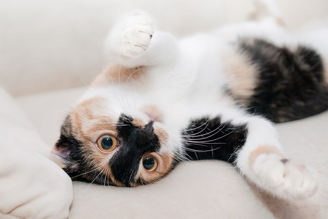

Infoseite über Katzen

Die Katzen (Felidae) sind eine Familie aus der Ordnung der Raubtiere (Carnivora) innerhalb
der Überfamilie der Katzenartigen (Feloidea).
Linien, Gattungen und Arten (Auswahl)
-
Großkatzen
- Gattung Neofelis
- Gattung Eigentliche Großkatzen (Panthera)
-
Hauskatzen-Linie
-
Gattung Echte Katzen (Felis)
- Europäische Wildkatze (Felis silvestris)
- Rohrkatze (Felis chaus)
Quellen